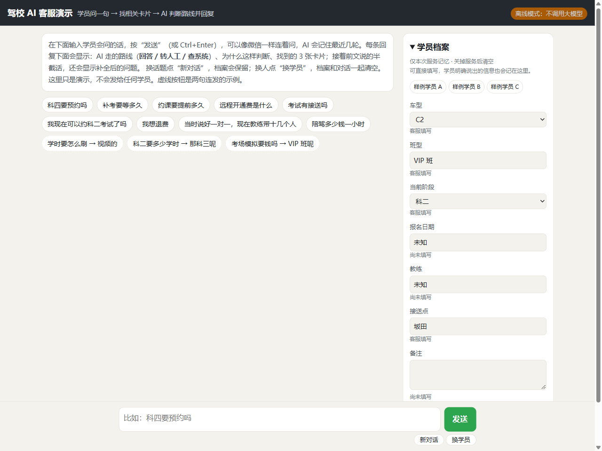
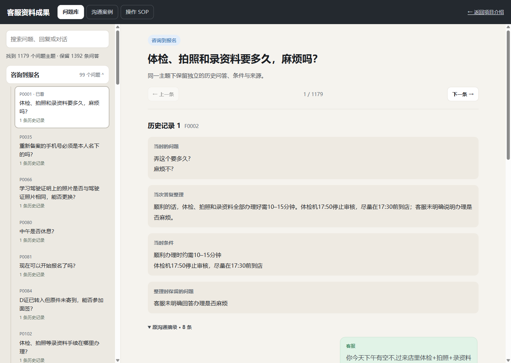
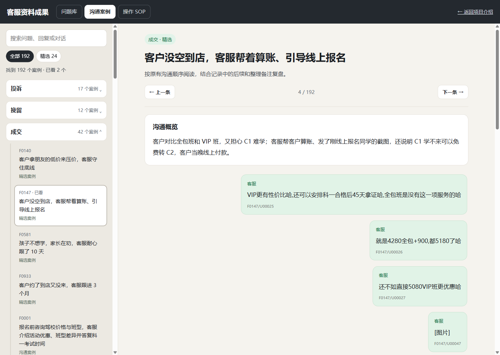
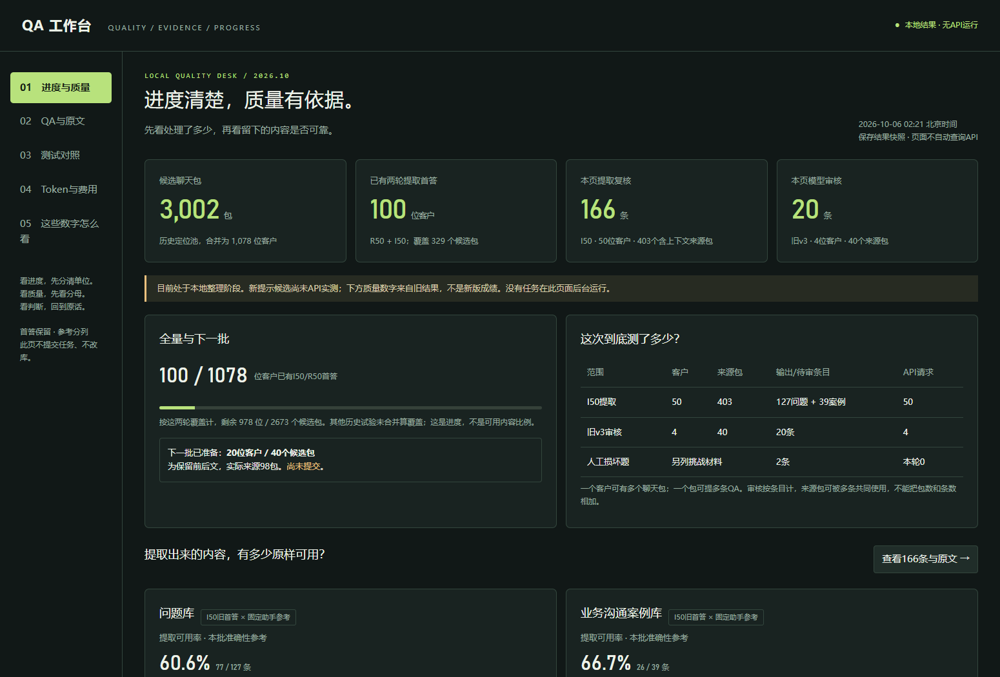
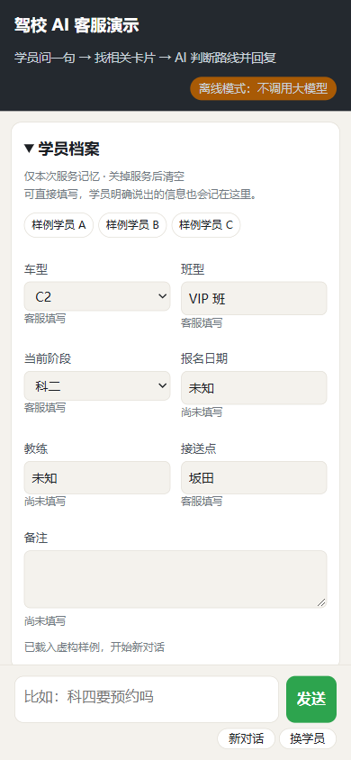

问题
试用时，AI 把内部引用“以考试篇第 2 条为准”直接说给学员。
原因
每次只检索 3 张卡片，被引用卡片不在其中时，“见第 X 条”就成了答案。
改法
我定位卡片间引用，规定每张卡片写全回答所需内容：
- 清理 8 处卡片间引用，改成直接写内容。
- 规定
answer字段不许写“见第 X 条”，并加入检查。 - 检查其余卡片，又改掉 7 处不适合说给学员的内部说法。
改完以后
回答已能给出完整内容。

驾校缺少知识库，经验散在微信聊天里；负责人因客服转化不高，希望整理常见问题和案例用于培训、复盘。
科二学时的一个错字模板曾被发出 90 次。客服说法不一，历史答案须经业务负责人确认才能用。
报名后常问考试、学时、接送、费用和约课，可用已确认知识支持回答。
项目从历史会话整理到检索问答，分五步完成。
提取质量未达要求，我改为程序、模型、人工三层审核，整理审核持续两个多月。
卡片字段分别服务检索、回答和追溯。asks 存学员常见问法，供检索；answer 存对学员的标准回答；handoff 存转人工、查系统条件，供 AI 判断；confirm、decided 存待确认与已确认结论。
结合上下文补全问题，检索前 3 张卡片，再按卡片回答。如“视频的”补成“学时要怎么刷视频的”；路线分回答、转人工、查系统，页面显示依据和判断理由。支持连续追问，车型、班型、阶段自动记入学员档案。





试用时，AI 把内部引用“以考试篇第 2 条为准”直接说给学员。
每次只检索 3 张卡片，被引用卡片不在其中时，“见第 X 条”就成了答案。
我定位卡片间引用，规定每张卡片写全回答所需内容：
answer 字段不许写“见第 X 条”，并加入检查。回答已能给出完整内容。